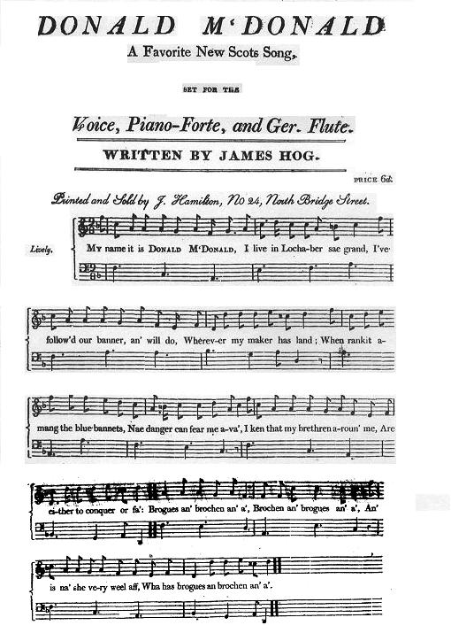

Donald McDonald
Bonaparte, the architect of the British union
by James Hogg (1770-1835)
Published in Edinburgh by J. Hamilton, c. 1800. TuneSaid by Hogg to be "Woo'd and married and a'"
Sequenced by Christian Souchon

|
To the tune:
First published in James Aird's "Airs and Melodies" (1782) "Donald McDonald was the song Hogg claimed to be his very first. It’s possibly his most famous, and he included it in three of four major song collections published during his lifetime. This musical setting was published in Edinburgh in the early 1800s by J. Hamilton, and the song sheet notes that it was ‘Written by James Hog’ [sic]. It is set to the unlikely tune ‘Woo’d an’ married an’ a’ ’ and celebrates the prowess of the Highland warriors in the light of a possible invasion by Napoleon and his troops." Source: University of Sterling, James Hogg Research Project. |
A propos de la mélodie:
Publié pour la première fois dans le recueil de James Aird, "Airs et Mélodies" (1782). "Donald McDonald est, au dire de Hogg, le premier chant qu'il ait écrit. C'est peut-être aussi son plus fameux et il figure dans quatre des principaux recueils publiés de son vivant. Le texte mis en musique parut à Edimbourg au début des années 1800 chez J. Hamilton avec la mention "composé par James Hog (sic). La mélodie retenue à un titre inattendu: "Courtisée et mariée et le reste". Le chant célèbre les exploits des soldats des Highlands dans la perspective d'une hypothétique invasion de l'armée de Napoléon." Source: Université de Sterling, Groupe de recherche James Hogg. |

|
DONALD MCDONALD
1. My name it is Donald McDonald, I leeve in the Highlands sae grand; I hae follow'd our banner, and will do, Wherever my master [1] has land. (bis) When rankit amang the blue bonnets, Nae danger can fear me awa; I ken that my brethren around me Are either to conquer or fa': (bis) Brogues an' brochin an' a', Brochin an' brogues an' a'; an' brochin an' a'; An' is nae her very weel aff, Wi' her brogues and brochin an' a'? (bis) 2. Last year we were wonderfu' canty, Our frien's an' our country to see; But since the proud consul's grown vantie, We'll meet him by land or by sea. (bis) Whenever a clan is disloyal, Wherever our King has a foe, He'll quickly see Donald McDonald, Wi's highlandmen a' in a row. (bis) Guns an' pistols an' a', Pistols and guns an' a', He'll quickly see Donald McDonald, Wi' guns an' pistols an' a'. (bis) 3. What though we befriendit young Charlie?-- To tell it I dinna think shame; Poor lad! he cam to us but barely, An' reckon'd our mountains his hame. (bis) 'Twas true that our reason forbade us, But tenderness carried the day; Had Geordie come friendless amang us, Wi' him we had a' gane away [2]. (bis) Sword an' buckler an' a', Buckler an' sword an' a'; an' buckler an' a', Now for George we 'll encounter the devil, Wi' sword an' buckler and a'! 4. An' O, I wad eagerly press him The keys o' the East to retain; For should he gie up the possession, We 'll soon hae to force them again, (bis) Than yield up an inch wi' dishonour, Though it were my finishing blow, He aye may depend on McDonald, Wi' his Hielanders a' in a row: (bis) Knees an' elbows an' a', Elbows an' knees an' a'; an' elbows an' a', Depend upon Donald McDonald, His knees an' elbows an' a'. (bis) 5. Wad Bonaparte land at Fort William, Auld Europe nae langer should grane; I laugh when I think how we 'd gall him Wi' bullet, wi' steel, an wi' stane; (bis) Wi' rocks o' the Nevis and Garny, We 'd rattle him off frae our shore, Or lull him asleep in a cairny, An' sing him --"Lochaber no more!" (bis) Stanes an' bullets an a', Bullets an' stanes an' a'; an' bullets an a', We 'll finish the Corsican callan Wi' stanes an' bullets an' a'. (bis) 6. For the Gordon is good in a hurry, An' Campbell is steel to the bane, An' Grant, an' McKenzie, an' Murray, An' Cameron will hurkle to nane; (bis) The Stewart is sturdy an' loyal, An' sae is McLeod an' McKay; An' I, their gude-brither McDonald, Shall ne'er be the last in the fray! (bis) Brogues and brochin an' a', Brochin an' brogues an' a'; and brochin an' a', An' up wi' the bonny blue bonnet, The kilt an' the feather an' a'. [3] (bis) |
DONALD MCDONALD
|
|
[1] "
Master
: This is the term by which the Highlander was wont to designate his
lawful prince. The word "maker," which appears in former editions of the
song, was accidentally printed in the first edition, and the Shepherd
never had the confidence to alter it."
Source: Charles Rogers ("The Modern Scottish Minstrel Vol II ", 1856). [2] Had Georgie... : Such was Flora McDonald's memorable defence (See "The Rover" ).
[3] The original text
"Wooed and Married and A’"
is a poem by Alexander Ross (1699–1784)
|
[1]
Maître /Master
: C'est le terme par lequel les Highlanders avaient coutume de désigner le Prince légitime. Le mot "maker" ("celui qui nous a fait") qui apparaît dans la première édition est du à une erreur et le "Berger d'Ettrick", comme on appelait Hogg, n'a jamais osé le faire modifier."
Source: Charles Rogers ("The Modern Scottish Minstrel Vol II ", 1856) . [2] Si Georges... : Tel fut le mémorable argument présenté pour sa défense par Flora McDonald's (Cf "Le vagabond" ).
[3] L'original de
"Demandée et épousée’"
est un poème d'Alexander Ross (1699–1784)
|
Donald McDonald sung in the studio of James Hogg Research Project